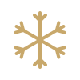
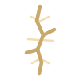
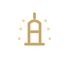

Vivianne dos Santos · uma porta
o que estou realmente a proteger?
As Sete Faces do Medo nao mostram monstros. Mostram as pequenas fracturas por onde o medo aprendeu a vestir-se de vida normal.

A fissura e a forma, a luz de dentro e o que a fissura faz. Kintsugi: a fractura nao e dano, e por onde a luz passa. A fissura e o medo, a luz e o "ha mais para ti". A luz nunca ilumina a cena, vem de dentro da racha.


As Sete Faces
Vivianne dos Santos
Permanencia, autoridade, livro serio, quase filosofia. Sem sans-serif moderna, sem manuscritas.
Universo: As Sete Faces do Medo Face: <nome> Cena: comportamento quotidiano com o medo por baixo, nunca nomeado Assinatura: uma fissura na cena, com luz a vir de dentro da fractura Objectos possiveis: chavena rachada, vidro, espelho, parede, porta entreaberta, mao a abrir Material: pedra, porcelana, ouro kintsugi, pele mineral Paleta: fundo carvao #0F0F10, dourado #C8A86B e #9E7B47, luz da fenda #F1D7A3 Proibido: terror, sobrenatural, sangue, corvos, gotico, olhos vazios, nevoa pesada Emocao: reconhecimento, depois curiosidade, nunca medo Registo: 80% fotografia humana cinematografica